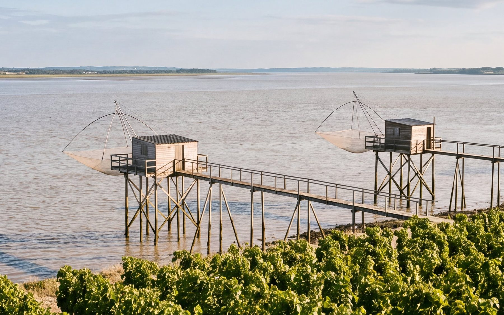
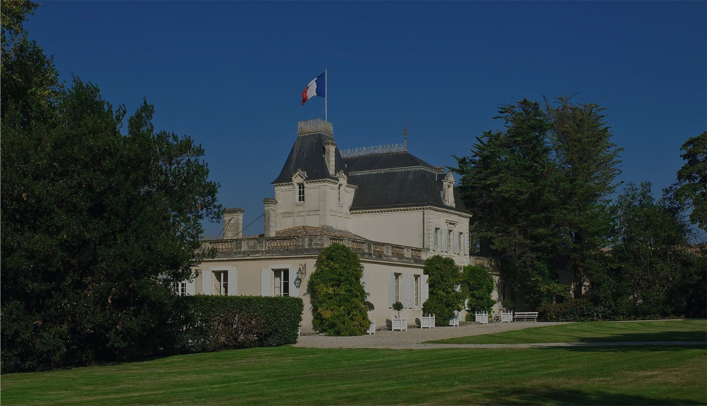

Visiter le Médoc : une journée entre vignes et estuaire
À une heure de Bordeaux, le Médoc se découvre lentement : de grands châteaux au bord de la route, des vignes jusqu’à l’eau et des cabanes de pêcheurs sur pilotis. Voici une journée pour le parcourir jusqu’à la pointe nord du Haut-Médoc, à Saint-Seurin-de-Cadourne.

Le matin : la Route des Châteaux
Depuis Bordeaux, la D2 remonte vers le nord en longeant l’estuaire. On la surnomme la Route des Châteaux : elle traverse les villages de Margaux, de Saint-Julien, de Pauillac et de Saint-Estèphe, et l’on aperçoit depuis la route certains des domaines les plus célèbres du monde, au milieu de leurs vignes.
Prenez le temps de vous arrêter. Les architectures racontent l’histoire du vignoble : chartreuses du XVIIIe siècle, châteaux du XIXe siècle, chais modernes. À Pauillac, les quais au bord de l’estuaire se prêtent à une pause.
Pour comprendre ce que vous voyez, notre article sur l’appellation Haut-Médoc explique en cinq minutes les graves, les croupes et le rôle de l’estuaire.
Le midi : au bord de l’estuaire
La Gironde est le plus grand estuaire d’Europe occidentale. Le long de ses rives, les carrelets sont l’image du Médoc : des cabanes de pêcheurs sur pilotis, reliées à la berge par un ponton, d’où l’on descend dans l’eau un grand filet carré, le carrelet, qui leur a donné leur nom.
À table, la cuisine du Médoc fait honneur au terroir :
- l’agneau de Pauillac, élevé près de l’estuaire ;
- l’entrecôte grillée aux sarments, ces rameaux de vigne coupés à la taille, qui donnent à la viande un goût fumé ;
- pour les plus curieux, la lamproie à la bordelaise, un plat historique de l’estuaire.
Plus au sud, à Cussac-Fort-Médoc, le Fort Médoc mérite un détour. Construit par Vauban à la fin du XVIIe siècle, il formait avec la citadelle de Blaye et le Fort Paté le « verrou de l’estuaire », qui protégeait Bordeaux. L’ensemble est inscrit au patrimoine mondial de l’UNESCO.
L’après-midi : Saint-Seurin-de-Cadourne et les châteaux Miailhe
Après Saint-Estèphe, la route arrive à Saint-Seurin-de-Cadourne, la commune la plus au nord du Haut-Médoc. Trois châteaux de la même famille s’y partagent les vignes qui descendent vers l’eau :
- Château Coufran, avec son belvédère au bout des rangs de merlot ;
- Château Verdignan, reconnaissable à sa tour et à sa haute flèche d’ardoise, face à l’estuaire ;
- Château Soudars, né en 1980 sur une friche couverte de pierres.
La famille Miailhe reçoit sur rendez-vous, pour des visites et des dégustations. C’est l’occasion de découvrir comment trois générations ont fait trois vins différents sur une même terre, et pourquoi les bouteilles attendent au château jusqu’à être prêtes à boire.
Sur place ou depuis votre téléphone, vous pouvez aussi mener l’Enquête à la racine : des bouteilles ont disparu de la cave, et certains indices se cachent sur les sites des trois châteaux.

Le soir : le soleil couchant sur la Gironde
En fin de journée, la lumière descend sur l’estuaire et sur les rangs de vigne. Les rives autour de Saint-Seurin-de-Cadourne et de Saint-Estèphe offrent de beaux points de vue sur l’eau, avant de reprendre la route de Bordeaux.
Nos conseils pratiques
- Réservez vos visites : la plupart des châteaux reçoivent sur rendez-vous. Vérifiez les horaires avant de partir.
- Choisissez votre saison : le printemps et le début de l’automne sont agréables. Pendant les vendanges, en septembre et en octobre, les châteaux sont très occupés : appelez avant de venir.
- Pensez au retour : le conducteur ne boit pas. Lors d’une dégustation, il est d’usage de recracher, et personne ne s’en offusque.
- Rapportez vos vins sans les porter : la boutique de la famille Miailhe propose un drive au château. Commandez en ligne, choisissez le jour et l’heure, et vos cartons sont déposés dans votre coffre.
Questions fréquentes
Combien de temps faut-il pour visiter le Médoc ?
Une journée permet de parcourir la Route des Châteaux et de visiter un ou deux domaines. Pour prendre le temps, comptez un week-end.
Faut-il réserver pour visiter un château du Médoc ?
Oui, dans la plupart des cas. Les châteaux de la famille Miailhe reçoivent sur rendez-vous, au +33 5 56 59 31 02.
Où se trouve Saint-Seurin-de-Cadourne ?
À environ une heure de route au nord de Bordeaux, juste au nord de Saint-Estèphe, au bord de l’estuaire de la Gironde. C’est la commune la plus au nord de l’appellation Haut-Médoc.
L’abus d’alcool est dangereux pour la santé, à consommer avec modération.